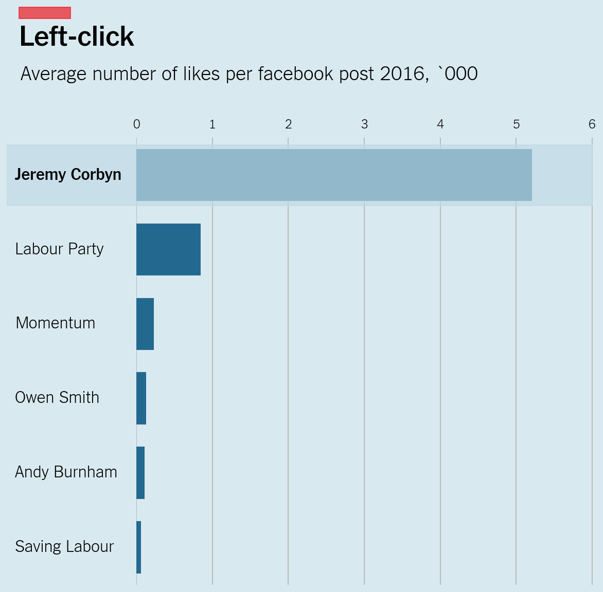

import pandas as pd
import matplotlib.pyplot as plt
from matplotlib.patches import Rectangle
import seaborn as sns;
from matplotlib.font_manager import FontPropertiesEstilo “The Economist” en Matplotlib
codigo
python
gráficos
matplotlib
Financial Times
Otro estilo pasado por el filtro matplotlib
Fuente: https://cast42.github.io/blog/cast42/jupyter/altair/2022/04/18/Economist-style.html
Fonts: https://github.com/FrancesCoronel/nyt-comm/tree/master/fonts/franklin
df = pd.read_csv('Economist_corbyn.csv').dropna()df['Average number of likes per Facebook post 2016'] = df['Average number of likes per Facebook post 2016']/1000# https://python-graph-gallery.com/custom-fonts-in-matplotlib/
# !!! change it to your path
personal_path = '/home/mato/.local/share/fonts/'
# get normal font and store it in `fira_sans_regular`
font = 'franklin-normal-300.ttf'
font_path = personal_path + font
franklin_thin = FontProperties(fname=font_path)
font = 'franklin-normal-600.ttf'
font_path = personal_path + font
franklin_bold = FontProperties(fname=font_path)colors = ['#ff80a8','#bc466b', '#9fd4e2']
color_map = {
"barras": '#116ea1',
"barras_seleccionadas": '#c1dae6',
"lineas": '#7d7369',
"fondo": '#d9e9f0',
"titulo":'#5c5a5b',
"rectangulo":'#c1dae6'
}
fig, ax = plt.subplots(figsize=(8, 8),
# dpi=450,
facecolor = color_map['fondo'] # Color de fondo del gráfico
)
# Color de fondo del canvas
ax.set_facecolor(color_map['fondo'])
# Gráfico
sns.barplot(x='Average number of likes per Facebook post 2016', y='Page', data=df,
label="Total", color=color_map['barras'],
zorder=3,
width=0.7)
# Seteamos la longitud y los titulos
ax.set(
xlim=(0, 6.05),
ylabel="",
xlabel=""
)
# Seteamos qué eje mostrar
sns.despine(left=True, bottom=True)
# Definimos grid sólo horizontal, que pase por detrás de las barras
ax.grid(axis='x', zorder=0)
# Definimos los labels para el eje x y el eje y
ax.set_xticks(range(0,7))
ax.set_xticklabels(labels = [0, 1, 2, 3, 4, 5, 6],font=franklin_thin, fontsize=12)
ax.set_yticks(range(0,6))
ax.set_yticklabels(labels = df['Page'].unique(),font=franklin_thin, fontsize=12)
# Desactivamos los ticks y seteamos font y tamaño
ax.tick_params(left= False, bottom=False)
ax.xaxis.set_tick_params(labeltop=True,
labelbottom=False
)
# Eliminamos la leyenda que Matplolib inserta por defecto
ax.get_legend().remove()
# Títulos
fig.suptitle('Left-click',
font=franklin_bold,
fontweight ="bold",
fontsize=28,
x=0.0240,
y=1.07,
)
plt.title('Average number of likes per facebook post 2016, `000',
font=franklin_thin,
fontweight ="bold",
fontsize=19,
y=1.115,
x=0.245
)
# Cuadro rojo en título
ax.add_patch(Rectangle((-1.55,-2.25), 0.68,0.15, color='#ed1c24', clip_on=False, alpha=0.7))
# Cuadro celeste en sobre la primer barra
ax.add_patch(Rectangle((-1.7,-0.4), 7.7,0.81, color=color_map['barras_seleccionadas'], clip_on=False, alpha=0.7,zorder = 3))
# Eliminamos los labels de los yticks y ubicamos los nuevos para que queden alienados a la izquierda
# Y ponemos en BOLD el primero
ax.set_yticklabels([])
labels = df['Page'].unique()
for i, yi in enumerate(df['Page']):
if yi !='Jeremy Corbyn':
ax.text(-1.60, yi,
labels[i],
horizontalalignment='left',
font=franklin_thin,
verticalalignment='center',
fontsize= 16)
else:
ax.text(-1.60, yi,
labels[i],
horizontalalignment='left',
font=franklin_bold,
verticalalignment='center',
fontsize= 16)
range(0,7)range(0, 7)for i in range(0,6):
print(i)0
1
2
3
4
5